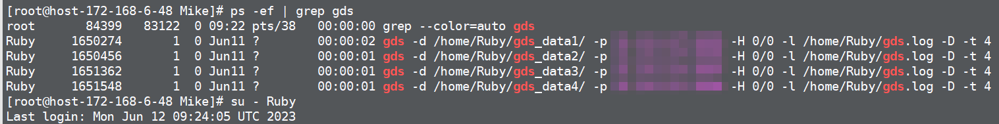
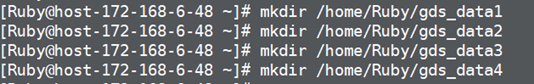

Procedure
For a GaussDB (DWS) node running GDS in the sandbox:
- Check whether GDS is running on the host. Created a directory of the same path on the host as the directory displayed after gds -d.
Example:

- Run mkdir /home/Ruby/gds_data1 and other commands to create a GDS directory on the host and sandbox for GDS to read related information after mapping.
Example:

- Create mapping on the host.
mount --bind /home/Ruby/gds_data1 /var/chroot/home/Ruby/gds_data1
mount --bind /home/Ruby/gds_data2 /var/chroot/home/Ruby/gds_data2
mount --bind /home/Ruby/gds_data3 /var/chroot/home/Ruby/gds_data3
mount --bind /home/Ruby/gds_data4 /var/chroot/home/Ruby/gds_data4
- Change the value of sandboxPath in the dws.conf file to /var/chroot. For details about how to change the value, see Modifying the GaussDB (DWS) Configuration File.
For a GaussDB (DWS) node without running the GDS but with the client installed in the sandbox:
- Create mapping on the host. For details, see 3.
- Modify the dws.conf file. For details, see 4.